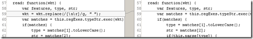

OpenLayers and Versioning in Aptana Studio
- date:
2011-06-30 18:41
- author:
admin
- category:
OpenLayers
- tags:
openlayers, sourcecontrol, svn
- slug:
openlayers-and-versioning-in-aptana-studio
- status:
published
This post details how to add a Subversion (SVN) plugin to Aptana to allow you to compare OpenLayers code with previous versions.
{kind=link}
A straw poll was taken on the OpenLayers mailing list in April 2010, and OpenLayers v3 development is taking place in git, with the central repository stored on GitHub. This means working with SVN and OpenLayers may become redundant. However as many OSGEO projects are stored in SVN with no current plans to move the same plugin and knowledge of working with SVN will still be useful.
For further details on working with SVN there is a free e-book “Version Control with Subversion” available at http://svnbook.red-bean.com/
Installing the Plugin
1. Open the Plugin Manager, by clicking on the green jigsaw piece in the toolbar below.
2. Right click and select Install in the plugin manager. A list of available plugins appears.
3. As you can see there are a couple of SubVersion related plugins available. Fortunately StackOverflow had a question titled SVN plugins for Eclipse - Subclipse vs. Subversive, which leant towards using Subclipse over Subversive. Life’s too short to dwell on possible advantages of using one over the other, so Subclipse it was.
4. Next follow a number of screens related to security certificates, and additional components. Other than selecting a couple of “Recommended” options I left the defaults.
5. Once the plugin was installed and Aptana restarted I now had a new project type = “Checkout Projects from SVN.”
6. The location of the OpenLayers trunk (the latest development version) can be found at http://svn.osgeo.org/openlayers/trunk/openlayers
7. Selecting the root will check out OpenLayers, and all the associated tests, build tools, and documentation.
8. After this you can create a new project location, and the plugin fetches all the latest files directly from the OpenLayers SVN server.
Using the Plugin
Now this is set up the fun can start! The reason I wished to go into the changes made to OpenLayers was that one of my unit tests was throwing an error after I have updated my OpenLayers 2.10 to the latest development version in OpenLayers. The error was:
exception: : object: wkt.replace is not a function
in ( [object Array]) at http://geographika.azurewebsites.net/openlayers/lib/OpenLayers/Format/WKT.js line 59
You can see when files were last modified, and by whom, in the File explorer tab. The most powerful feature though is being able to compare the current files with any past version of OpenLayers. This can be done by right-clicking on a file, and selecting the “Compare With” option.
Now to diagnose my error, I looked to see if any changes had been made from the 2.10 version of OpenLayers(which my unit test passed) , with the current development version. Selecting the “Branch/Tag” option allows you to select a version (based on its tag). Version 2.10 is listed after 2.1 due to sorting by characters rather than numbers.
` <http://geographika.co.uk/archive/images/2011/06/image11.png>`__
{kind=link}
A comparison showed that the file and line had indeed been changed. A replace function had been added to the code to remove whitespace from the WKT string.
Upon further debugging it turned out the problem was my test had been passing an Array rather than a String, and as an Array object does not have a replace function is was correctly throwing an error. This served as a good reminder that unit tests can themselves have bugs..
- orphan:
Comments
Add Comment